In Silos besteht die Gefahr von Bränden und Explosionen durch Funken, glimmende Teilchen oder Glimmnester, die über mechanische oder pneumatische Fördereinrichtungen eingetragen werden können oder als Folge einer Selbstentzündung des gelagerten Spänematerials entstehen.
Daher müssen in geschlossenen Silos geeignete ortsfeste Brandeindämmungs-Einrichtungen wie Sprühwasser-Löscheinrichtungen oder Feuerlöschanlagen (z. B. Inertgas-, Schaum-, Wassernebel-Löschanlagen) und Druckentlastungseinrichtungen (z. B. Explosionsklappen, Berstscheiben, Reißfolien) vorgesehen werden.
Diese Forderungen gelten auch für alle Container, ausgenommen solche mit Plane.
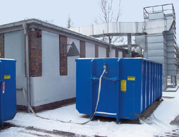
Abb. 9.1 Späne-Container mit Löscheinrichtung und Druckentlastung (Druckentlastung im Deckelbereich nicht sichtbar)
Die richtigen Brandbekämpfungsmaßnahmen sollten mit der Feuerwehr abgestimmt sein.
Wenn Sammel- oder Lagereinrichtungen im oberen Bereich ständig offen sind und im Brandfall aus sicherer Entfernung vom Boden aus Löschwasser auf das Lager-Gut von oben aufgegeben werden kann, z. B. bei offenen Silos in Sägewerken, ist der Einbau einer ortsfesten Löscheinrichtung nicht erforderlich.
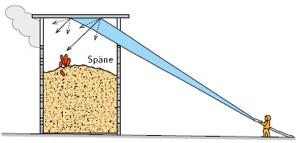
Abb. 9.2 Löschen eines Brandes im oberen Bereich des offenen Silos
Eine Sprühwasserlöschung dient im Brandfall zur Staubbindung und Brandeindämmung. Eine Löschung von Glimmnestern in der Materialschüttung ist mit einer Sprühwasserlöscheinrichtung nicht möglich. Das Material muss in jedem Fall ausgetragen und das mögliche Aufflammen von Glimmnestern gelöscht werden.
Durch Sprühwasser-Löscheinrichtungen oder Sprühwasser-Löschanlagen wird im Brandfall das Löschwasser durch geeignete Düsen gleichmäßig und in kleinen Tröpfchen über den gesamten Querschnitt des Silos verteilt (Quellwirkung von Holzstaub und -spänen beachten!). Dadurch wird auch Schwebstaub im Silo niedergeschlagen, wodurch die Explosionsgefahr erheblich reduziert wird. Filmbildende Zusätze, die dem Löschwasser beigegeben werden, können die Löschwirkung verbessern. VdS 2109 (siehe Anhang 1) gibt Hinweise für die Planung und Errichtung von ortsfesten Sprühwasser-Löschanlagen mit offenen Düsen.
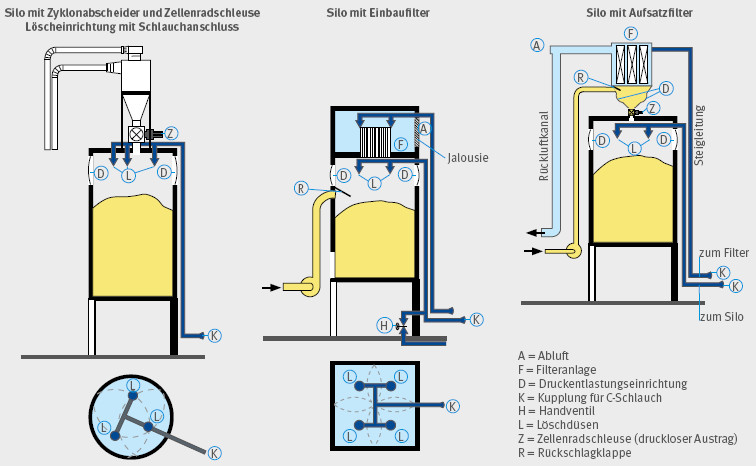
Abb. 9.3 Aufbau einer Löscheinrichtung bei unterschiedlichen Anlagenkonfigurationen
Mögliche Ausführungen sind:
Ein zusätzlicher Schlauchanschluss kann vorgesehen werden. Selbsttätig auslösende Sprühwasser-Löschanlagen müssen auch von Hand auslösbar sein.
Löschleitungsnetz
Rohrleitungen sollten aus feuerverzinktem Stahl bestehen. Wegen der Gefahr von Frostschäden müssen die Rohrleitungen trocken bleiben oder entwässert werden können. Das bedeutet:
Erfolgt die Löschwasserversorgung über einen C-Anschluss, sollte für die Steigleitung bei Silohöhen bis 20 m mindestens DN 50 verwendet werden. Der Anschluss – die sogenannte Festkupplung – für eine Schlauchleitung sollte zwischen 0,4 m und 0,8 m über dem Boden angebracht und vor Verschmutzung mit einer Kappe (Blindkupplung) geschützt werden. Die Auswahl der Schlauchanschlüsse sollte mit der Feuerwehr abgestimmt werden. Hauptleitungen (Steigleitungen) mit Schlauchanschluss müssen mit einem sogenannten Steinfänger (Maschenweite maximal 4 mm) ausgerüstet sein. Die Rohrleitungen des Betriebsnetzes und der Löschanlage müssen so bemessen sein, dass die in EN 12 779 geforderte Mindest-Löschwasserbeaufschlagung von 7,5 l/(m2 · min) zur Verfügung steht.
Der Querschnitt der Hauptleitung sollte mindestens so groß sein wie die Summe der Querschnitte aller Verteilerleitungen. Bei Silobauhöhen über 20 m ist die erforderliche Rohrnennweite in Abhängigkeit von der Silohöhe zu vergrößern.
Die Verteilerleitungen im Silo bzw. in der Filteranlage sollten dann mindestens DN 25 haben. Sind Silos bzw. Filteranlagen in Gebäuden aufgestellt, muss der Anschluss für die Schlauchleitung ins Freie geführt werden und gut zugänglich sein. Schläuche bis zum nächsten Hydranten sollten vorgehalten werden.
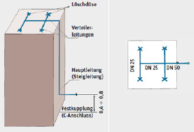
Abb. 9.4 Prinzipieller Aufbau eines Verteilernetzes
Löschdüsen in Silos sind so anzuordnen, dass eine gleichmäßige Wasserbeaufschlagung der Brandstoffe gewährleistet wird und die erforderliche Löschintensität (in l/m2 · min) erreicht wird.
Moderne Löschdüsen verarbeiten das Löschwasser zu einem feinen Löschnebel. Die treibende Kraft ist der Wasserdruck vor den Löschdüsen. Der Wasserdruck öffnet das federbelastete Düsenventil und der übrig bleibende Wasserdruck wird in Geschwindigkeit umgewandelt. Durch diese starke Beschleunigung zerreißt der Wasserfilm in viele kleine Tröpfchen und bildet den Löschnebel.
Das Löschmedium ist in jedem Fall Wasser. Bei schwierig zu benetzenden Materialien können dem Löschwasser geeignete Zusatzstoffe hinzugefügt werden.
Düsen müssen unempfindlich gegen Verschmutzung sein. Der Düsenteller öffnet und schließt bei jedem Arbeitsspiel. Allein durch diese Bewegung werden kleinere Verkrustungen vom Düsenrand entfernt. Das ausströmende Wasser reinigt den Düsenkegel zusätzlich. Im Ergebnis werden so lange Wartungsintervalle erreicht.
Die von einer Löschdüse zu schützende Fläche darf 12 m2 nicht überschreiten. Der Abstand der Löschdüsen zueinander darf höchstens 2 m betragen.
Bei der Inertisierung werden die Flammen nicht durch Wassereintrag bekämpft (Kühleffekt), sondern der Sauerstoffgehalt wird durch Einbringung von Stickgasen (z. B. Stickstoff N2 oder Kohlendioxid CO2) soweit reduziert, bis dem Feuer die Oxidationsgrundlage entzogen ist (Stickeffekt). In der nachfolgenden Tabelle sind die notwendigen Sauerstoff-Grenzkonzentrationen im Vergleich zur atmosphärischen Sauerstoffkonzentration für verschiedene Anwendungsbereiche zusammengefasst.
Notwendige Sauerstoffkonzentrationen:
| • | Atmosphäre | ca. 21 % |
| • | Atemluft | > 13 % |
| • | Staubexplosion (Holz) | > 8 % |
| • | Brandausbreitung (Holz) | > 6 % |
| • | Vorgabe Inertisierung (Holz) | < 5 % |
Bautechnische Maßnahmen:
| A. | Zum Inertisieren des Silos sollte ein C-Rohr-Anschluss (nach DIN 14 302) angebracht werden. Das Rohr sollte so eingebaut sein, dass die Gasaustrittsöffnungen nicht durch das Schüttgut verstopft werden können. Der Inertgas-Anschluss sollte 1,00 m bis 1,50 m oberhalb der Austrageinrichtung angebracht werden, um eine genügend große Schüttgutvorlage zur Abdichtung der Austragung gegen Sauerstoffeintrag zu bekommen. Die Rohrleitung zur Einbringung des Inertgases sollte als Ringleitung ausgebildet sein. | ||||||
| B. | Es sollten mindestens drei verschließbare 1/2 Zoll-Öffnungen für Messsonden in den folgenden Bereichen vorgesehen werden:
|
||||||
| C. | Um ein gefahrloses Ausräumen des Silos zu ermöglichen, sollte eine Notaustrageinrichtung (siehe Abschnitt 8.4/8.5) vorgesehen werden. | ||||||
| D. | Um ein unkontrolliertes Abströmen des Inertgases zu vermeiden, sollte das Silo möglichst gasdicht sein. Zum Verschließen der anlagentechnisch notwendigen Öffnungen sollten Verschlusseinrichtungen (z. B. Absperrschieber) vorgesehen werden. | ||||||
| E. | Das Silo ist mit einem gut sichtbaren Schild in der Nähe des Inertgas-Anschlusses zu versehen, aus dem der maximal zulässige Innendruck ersichtlich ist. Eine Zeichnung des Silos mit allen notwendigen Konstruktionsdaten (z. B. Höhe, Durchmesser, Öffnungsformen, Öffnungsgrößen) ist an ständig besetzter Stelle bereitzuhalten. |
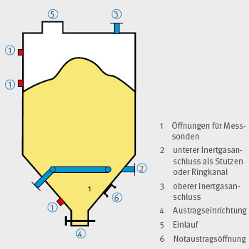
Abb. 9.6 Prinzipieller Aufbau für die Anwendung der Maßnahme „Inertisierung“ bei Silobränden
Vorgehensweise im Brandfall:
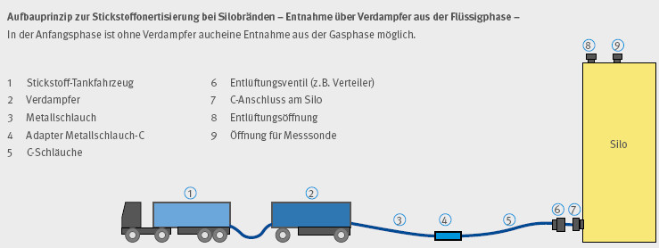
Abb. 9.7 Aufbauprinzip zur Stickstoff-Inertisierung bei Silobränden – Entnahme über Verdampfer aus der Flüssigphase
In Silos für Holzstaub und -späne können Staubexplosionen nicht ausgeschlossen werden. Da bei einer Holzstaubexplosion Überdrücke bis 9 bar auftreten können und eine Auslegung der Gebäude-, Anlagen- und Bauteilfestigkeiten auf solche Beanspruchungen in der Praxis kaum möglich ist, müssen Maßnahmen des konstruktiven Explosionsschutzes getroffen werden. Solche Maßnahmen sind z. B. Explosionsdruckentlastung und explosionstechnische Entkoppelung. Bei der Explosionsdruckentlastung müssen die Flammenausbreitung und Druckwirkungen im Außenraum beachtet werden.
Nach erfolgter Zündung eines Holzstaub-Luftgemisches würde der Druck im Silo in Sekundenbruchteilen bis zum maximalen Explosionsdruck (pmax) ansteigen. Demgegenüber steht die wesentlich geringere Gebäudefestigkeit (pred,max) des Silos. Die Schutzmethode Explosionsdruckentlastung verhindert durch rechtzeitige Freigabe von Öffnungen (Berstscheiben oder Explosionsklappen mit geringem stationärem Ansprechdruck [pstat]) den Anstieg des bei der Explosion auftretenden Druckes über die Gebäudefestigkeit hinaus. Da solche Bauteile im Explosionsfall zuverlässig mit der notwendigen Geschwindigkeit (geringe Massenträgheit) öffnen müssen, um die Zerstörung des Silogebäudes mit allen daraus resultierenden Folgerisiken (z. B. Trümmerwurf, Flammenstrahlzündung mit nachfolgender weiterer Explosion) zu verhindern, müssen die Bauteile bei Neuanlagen geprüft sein (Baumusterprüfbescheinigung).
Der nach der Freigabe der Öffnungen noch verbleibende Überdruck (als maximaler reduzierter Explosionsüberdruck pred,max bezeichnet; entspricht der Gebäudefestigkeit) ist dann wesentlich kleiner als der maximale Explosionsüberdruck pmax.
Öffnungen in Decken und Wänden zwischen Filterraum und Silo gelten nicht als wirksame Druckentlastungsflächen.
Die Druckentlastungseinrichtungen müssen nach DIN EN 14491 „Schutzsysteme zur Druckentlastung von Staubexplosionen“ ausgeführt sein.
Druckentlastungseinrichtungen können als Explosionsklappen, Berstscheiben oder Reißfolien konzipiert werden.
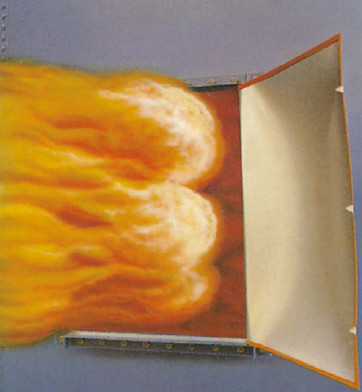
Abb. 9.8 Druckentlastung einer Staubexplosion durch Freigabe der Entlastungsöffnung. Dabei treten Flammen aus dem Inneren des Silos in den Außenbereich aus.
Bei einer Explosion und beim Ansprechen der Druckentlastungseinrichtung dürfen Personen durch fortgeschleuderte oder herabfallende Teile und durch mögliche Druck- und Flammenauswirkungen nicht gefährdet werden können. Das Herabfallen der gesamten Entlastungseinrichtung oder das Fortschleudern von Klappen muss z. B. durch eine ausreichende Rahmenbefestigung und geeignete Ausführung der Scharniere verhindert werden. Die Entlastungsfähigkeit ist nachzuweisen.
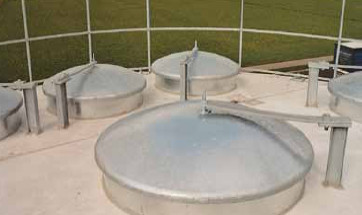
Abb. 9.9 Explosionsklappen im Deckenbereich eines Silos
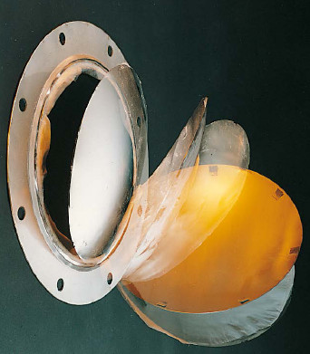
Abb. 9.10 Berstscheibe
Durch die Entlastungsvorgänge dürfen Personen nicht gefährdet und sicherheitstechnisch bedeutsame Anlagenteile nicht beeinträchtigt werden. Die Druckentlastungsöffnungen dürfen deshalb weder in andere Räume oder auf benachbarte, gefährdete Gebäude (z. B. Gebäude mit gegenüberliegenden Fenstern, Dachöffnungen) noch direkt auf Verkehrs- und Rettungswege gerichtet sein. Die anzunehmenden Flammenlaufweiten können nach DIN EN 14 491 abgeschätzt werden (siehe auch Abschnitt 9.4).
In der Umgebung von Abblas-Öffnungen dürfen keine brennbaren Materialien (z. B. Dachabdeckungen, Holzstapel) vorhanden sein.
In Silos müssen die Öffnungen für die Druckentlastungseinrichtungen im oberen Teil der Wände oder in der Decke angeordnet werden. Die Druckentlastungseinrichtungen dürfen nicht mit Schüttgut zugeschüttet werden können.
Bei Anordnung von Druckentlastungsöffnungen im Dach oder in der Decke müssen Witterungseinflüsse, z. B. Schneelasten, berücksichtigt werden.
Weitere Einzelheiten und Berechnungsbeispiele sind der DGUV Information 209-045 zu entnehmen.
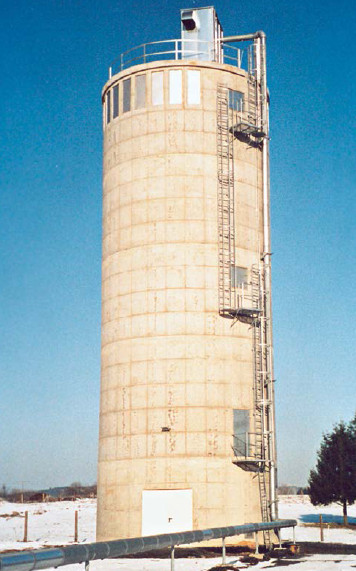
Abb. 9.11 Silo mit Berstscheiben oberhalb des max. Füllgutstandes
Beim Entlastungsvorgang treten im Außenbereich Flammenausbreitung und Druckwirkungen auf. Ursache hierfür ist der Ausschub von unverbranntem Material mit anschließender Entzündung des in der Folge des Ausschubes im Außenbereich entstehenden Staub-Luft-Gemisches durch den aus der Entlastungsöffnung austretenden Flammenstrahl. Der Flammenstrahl im Außenbereich kann bei Silos eine Länge bis etwa 60 m erreichen. Die maximale Reichweite (LF), die Flammenbreite (WF) der aus einem Behälter in den Außenbereich austretenden Flammen, der maximale Überdruck (pext) im Außenbereich sowie der Abstand des maximalen äußeren Überdruckes von der Entlastungseinrichtung lassen sich nach den empirischen Gleichungen aus DIN EN 14 491 „Schutzsysteme zur Druckentlastung von Staubexplosionen“ ermitteln.
In der Tabelle sind die Werte für die Flammen- und Druckausbreitung für Behälter (Silos, Filteranlagen) mit einem maximalen reduzierten Explosionsdruck pred,max = 0,5 bar für ein Längen/ Durchmesser-Verhältnis L/D < 2 und mit unterschiedlichen Volumina dargestellt. Dabei ist die Flammenausbreitung bei vertikal angebrachten Druckentlastungseinrichtungen geringer als bei horizontal angebrachten.
Bei praktisch ausgeführten Anlagen können sich in Abhängigkeit vom Beschickungsverfahren geringere Flammenreichweiten ergeben (siehe hierzu auch DGUV Information 209-045).
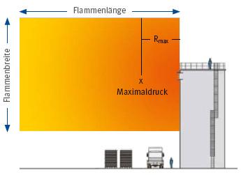
Abb. 9.12 Prinzip-Skizze zur Flammen- und Druckauswirkung im Entlastungsfall
| V (m3) | Flammenausbreitung (m) Druckentlastung | Druckausbreitung für pred,max = 0,5 bar und L/D < 2 | |||
| horizontal | vertikal | Flammenbreite | Maximaldruck (bar) | Abstand zur Entlastungseinrichtung Rmax (m) | |
| 5 | 17 | 14 | 5 | 0,13 | 4,3 |
| 10 | 22 | 17 | 6 | 0,16 | 5,4 |
| 20 | 31 | 22 | 8 | 0,19 | 6,8 |
| 30 | 34 | 25 | 9 | 0,21 | 7,8 |
| 40 | 37 | 27 | 10 | 0,23 | 8,5 |
| 50 | 39 | 29 | 10 | 0,24 | 9,2 |
| 60 | 41 | 31 | 11 | 0,25 | 9,8 |
| 70 | 43 | 33 | 12 | 0,26 | 10,3 |
| 80 | 45 | 36 | 12 | 0,27 | 10,8 |
| 90 | 46 | 37 | 13 | 0,28 | 11,2 |
| 100 | 58 | 47 | 13 | 0,29 | 11,6 |
| 200 | 60 | 54 | 16 | 0,34 | 14,6 |
| 300 | 60 | 59 | 19 | 0,38 | 15,0 |
| 400 | 60 | 60 | 21 | 0,41 | 15,0 |
| 500 | 60 | 60 | 22 | 0,44 | 15,0 |
| 600 | 60 | 60 | 24 | 0,46 | 15,0 |
| 700 | 60 | 60 | 25 | 0,47 | 15,0 |
| 800 | 60 | 60 | 26 | 0,49 | 15,0 |
| 900 | 60 | 60 | 27 | 0,51 | 15,0 |
| 100 | 60 | 60 | 28 | 0,52 | 15,0 |
Tabelle 9.1 Flammen- und Druckausbreitung für pred,max = 0,5 und L/D < 2
Im Inneren von Silos sollten elektrische Einrichtungen vermieden werden, da hier in der Regel Zone 20 (bei kontinuierlicher, pneumatischer Beschickung) bzw. Zone 21 (bei diskontinuierlicher, pneumatischer oder mechanischer Beschickung) vorliegt. Elektrische Betriebsmittel müssen deshalb der Gruppe II, Gerätekategorie 1D bzw. 2D nach der Richtlinie 2014/34/EU bzw. 94/9/EG (ATEX 95) bzw. Explosionsschutzverordnung (11. ProdSV) entsprechen.
Falls keine Zone vorliegt (z. B. im Heizraum unterhalb der Austragung), müssen elektrische Geräte mindestens der Schutzart IP 54 (staub- und spritzwassergeschützt) entsprechen.
Elektrische Leuchten in Schutzart IP 54 müssen außerdem mit der Kennzeichnung für die zulässige Oberflächentemperatur versehen sein.
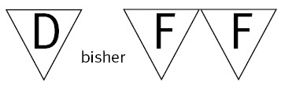
An Stellen, an denen mit Staubablagerungen zu rechnen ist, darf die Oberflächentemperatur 135° C nicht überschreiten (entsprechend Temperaturklasse mindestens T4). Dies ist insbesondere an Motorengehäusen zu beachten.
Freistehende Silos müssen mit einer Blitzschutzanlage nach DIN V VDE V 0185 „Blitzschutzanlage (VDE-Richtlinie)“ ausgerüstet sein, wenn sie blitzschlaggefährdet sind. Zur Risikoorientierung siehe hierzu VdS 2010 „Risikoorientierter Blitz- und Überspannungsschutz – Richtlinien zur Schadenverhütung“. Dann müssen auch alle anderen metallischen Anlageteile wie Treppen, Steigleitern, Geländer elektrisch leitend verbunden und geerdet werden. Näheres entscheidet die für die Baugenehmigung zuständige Behörde.
Weitere Einzelheiten sind der DGUV Information 209-045 zu entnehmen.